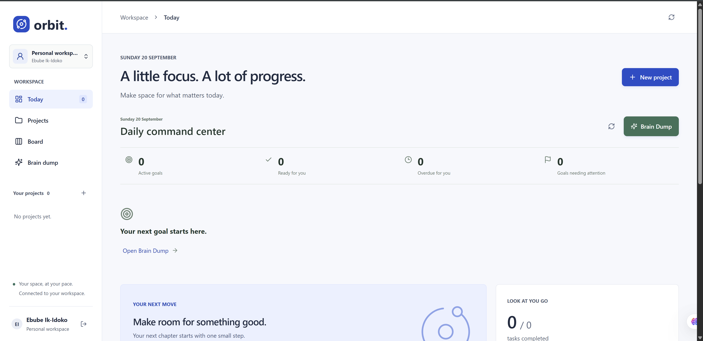
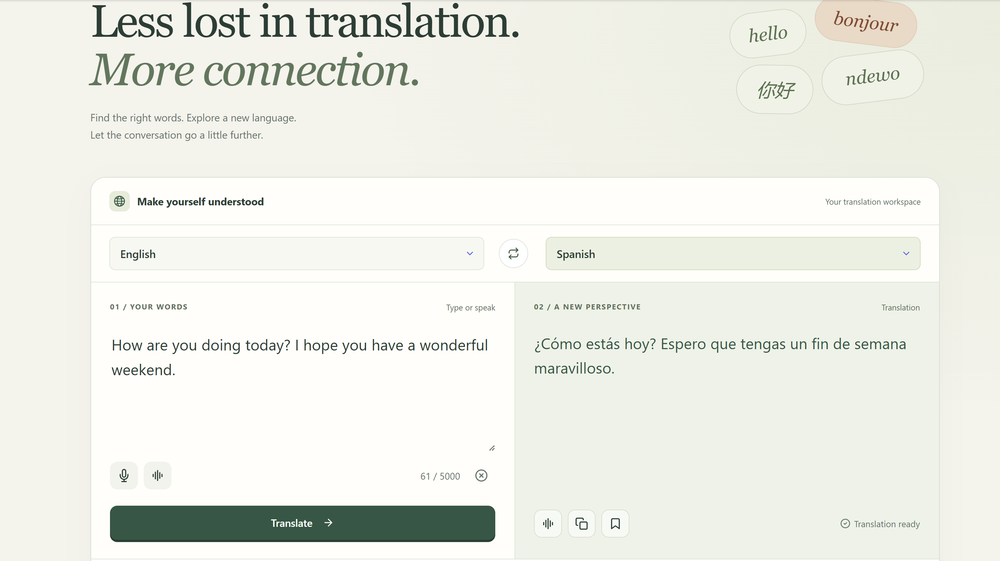

01
Productivity / WorkspaceA LITTLE FOCUS. A LOT OF PROGRESS.
Orbit.

DESIGN MINDED. DETAIL DRIVEN.
PORTFOLIO / 01From an idea to something you can use.
A LITTLE FOCUS. A LOT OF PROGRESS.

LET THE CONVERSATION GO A LITTLE FURTHER.

THE THREAD BETWEEN THEM
Less friction.
More possibility.